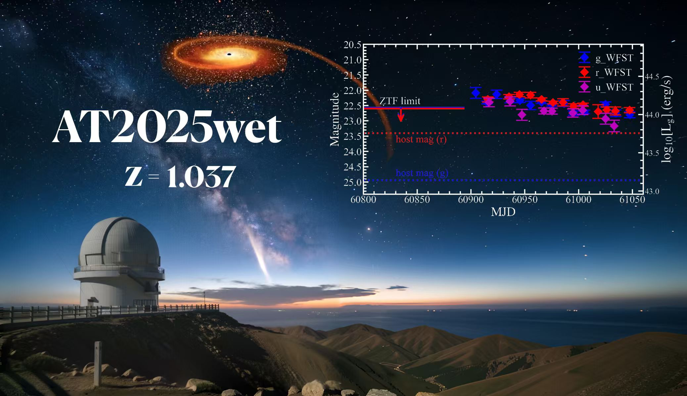
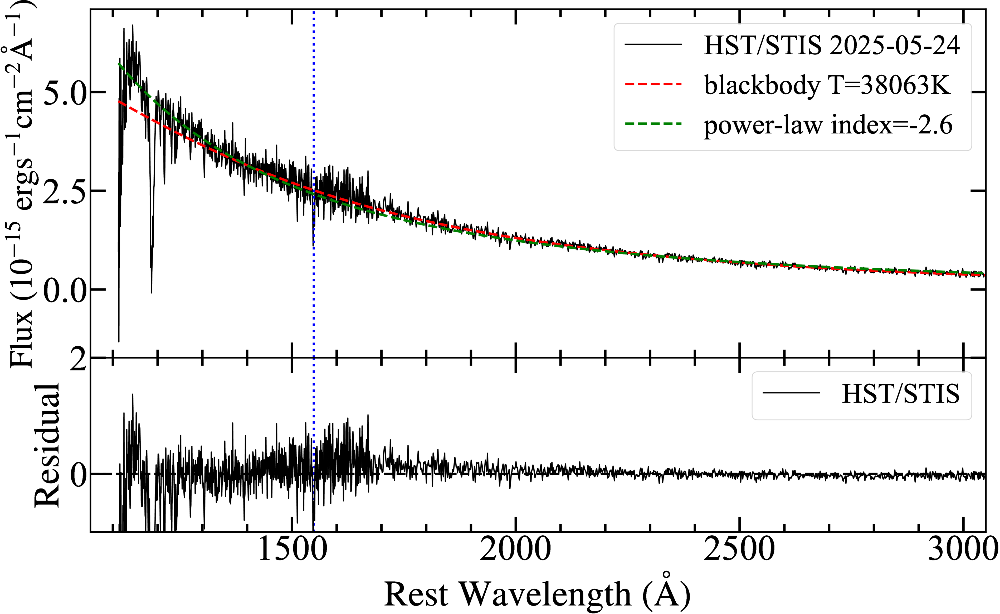
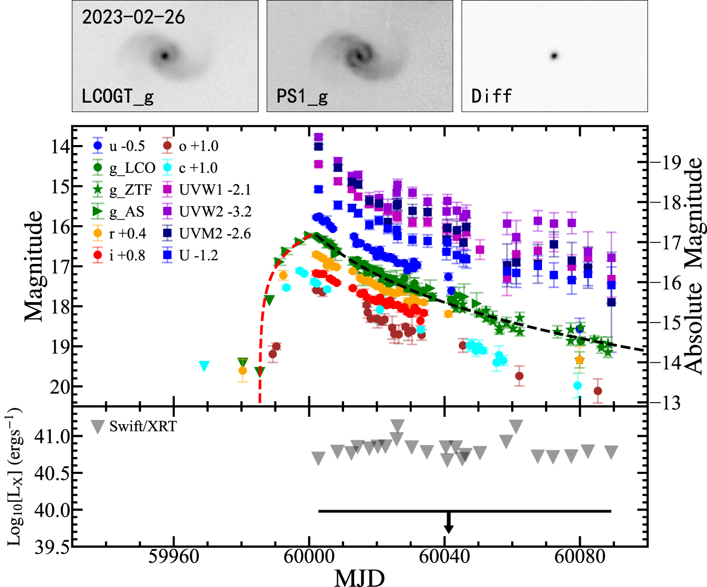
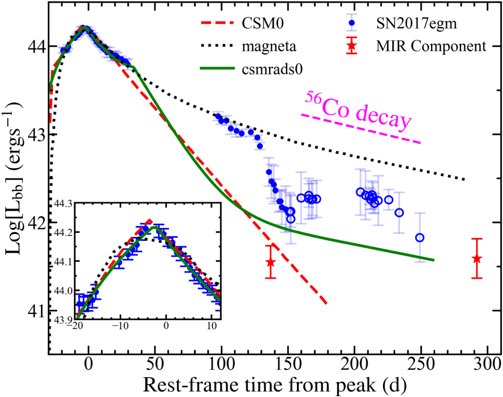

First-author and featured works on optical transients and tidal disruption events
Multi-wavelength observations and physical interpretation of the TDE AT2025wet — featured work
Tidal disruption events (TDEs) occur when a star is torn apart by the gravity of a supermassive black hole, unveiling otherwise quiescent black holes through a bright, transient flare. AT2025wet is a tidal disruption event we have followed up across the optical, ultraviolet, and X-ray bands.
Combining early survey discovery with rapid multi-wavelength follow-up and spectroscopy, we characterize the temporal evolution of the accretion flow and probe the geometry and physics of the disk, contributing to our understanding of the diversity of TDEs and their black-hole demographics.

Ultraviolet spectral evidence for Ansky with quasiperiodic eruptions — ApJL, 994, L16, 2025 DOI
Some tidal disruption events exhibit quasiperiodic eruptions (QPEs) — periodic brightening episodes that may be produced by an orbiting stellar remnant or by a repeating partial disruption. Ansky is a slowly evolving, featureless TDE for which we obtained a rich ultraviolet dataset.
Our ultraviolet spectral analysis shows broad, featureless absorption and pronounced variability consistent with quasiperiodic eruptions on top of the secular decay. The combining of X-ray and UV monitoring enables us to probe the geometry and physics of the accretion flow.

A nearby TDE in star-forming galaxy NGC 3799 — ApJL, 952, L35, 2023 DOI
Most optical TDEs are discovered in quiescent, elliptical hosts. AT 2023clx stands out as the faintest and closest optical TDE found to date in a nearby star-forming galaxy (NGC 3799), making it an excellent target for detailed follow-up.
We present a comprehensive multi-wavelength characterization of AT 2023clx, including early rise and decay behavior, and discuss what it reveals about the diversity of TDEs and their host environments, as well as the role of star-forming host galaxies in producing detectable transients.

Precursor activity and light-curve features of a superluminous supernova — ApJ, 949, 23, 2023 DOI
Superluminous supernovae (SLSNe) are among the most energetic explosions in the universe, and the origin of their light-curve bumps remains debated. SN 2017egm is a helium-rich SLSN showing multiple bumps in its light curve and clear precursor activity.
We model the multi-band light curves and spectra, interpreting the bumps as episodes of continued energy injection — possibly from a magnetar or from interaction with circumstellar material. This provides insight into the diversity of engines powering superluminous explosions.
